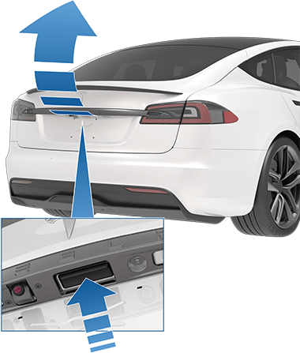

To open the rear trunk, ensure Model S is in Park, then do one of the following:
Model S must be unlocked or detect a key before you can use the switch to open the liftgate.
The instrument panel informs you when a door or trunk is open. To stop a liftgate while it is moving, single-click the rear trunk button on the key fob. Then, when you double-click the rear trunk button, it moves again, but in the opposite direction (provided it was not almost entirely open or closed when you stopped it). For example, if you single-click to stop the liftgate while opening, when you double-click, it closes.
To open the front trunk, ensure Model S is in Park, and then do one of the following before pulling the hood open:
The instrument panel displays when a door, trunk, or liftgate is open.